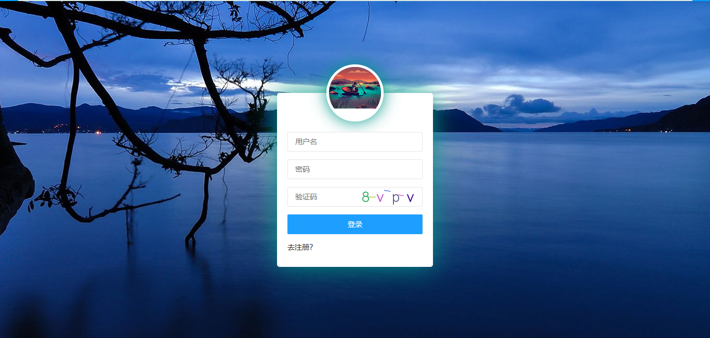
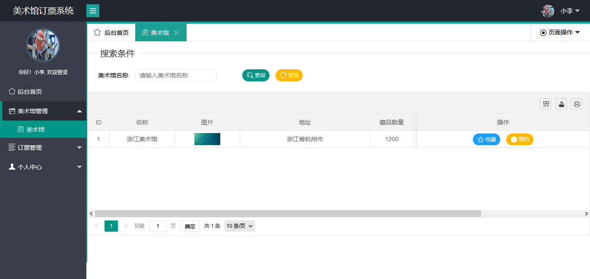
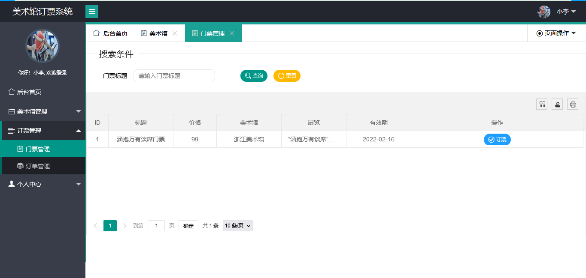
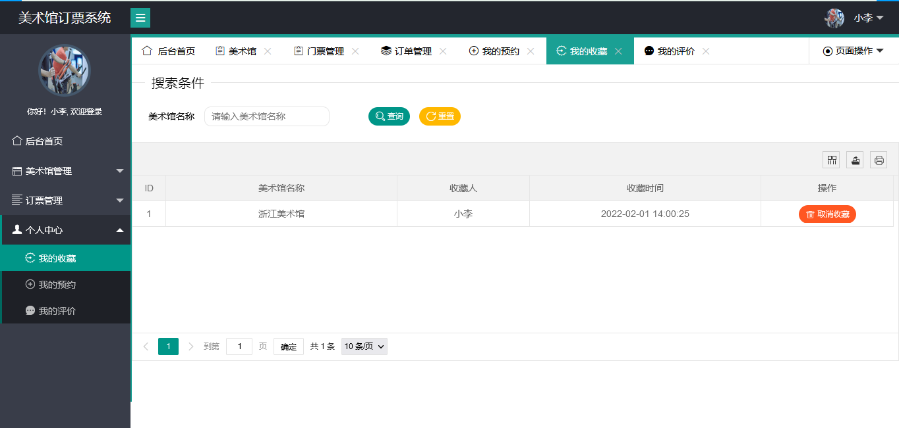
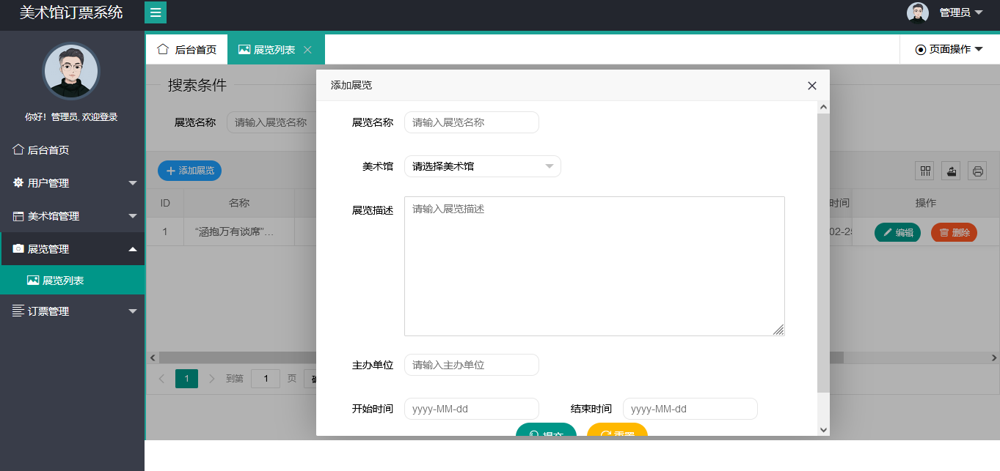

SpringBoot 美术馆售票系统（含论文）
一、项目介绍
146
美术馆售票系统系统基于 SpringBoot+Mybatis 进行开发，系统分为管理员和普通用户两种角色。主要功能有：
管理员：
-
用户管理
-
美术馆管理
-
展览管理
-
门票管理
-
订单管理
-
订单退票
普通用户：
-
登录注册
-
美术馆收藏
-
美术馆预约
-
订票
-
我的订单
-
我的收藏
-
我的预约
-
我的评价
二、技术框架
-
后端：SpringBoot，Mybatis
-
前端：layui，jquery
三、安装教程
-
用 idea 打开项目
-
在 idea 中配置 jdk 环境
-
配置 maven 环境并下载依赖
-
新建数据库，导入数据库文件
-
在 application.yml 文件中将数据库账号密码改成自己本地的
-
默认上传图片在
F:/upload/
，如果没有 F 盘，则替换项目中的
file.properties
和
AppFileUtils.java
文件中的地址
-
启动运行，浏览器输入
http://localhost:8080
进行访问。管理员账号密码 system/123456。普通用户账号密码 xiaoli/123456
四、项目项目




